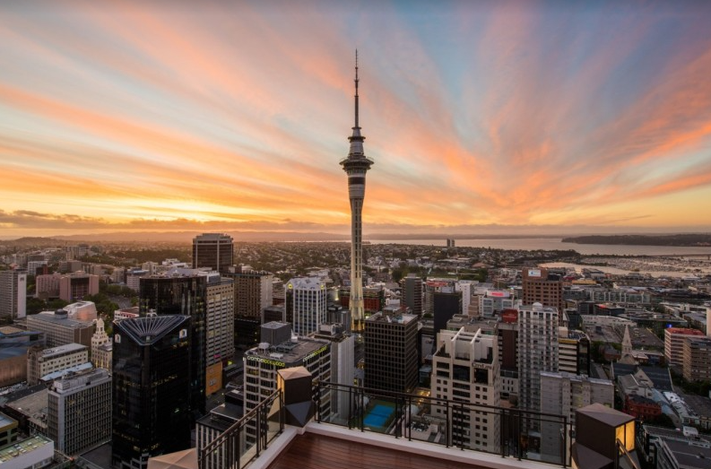
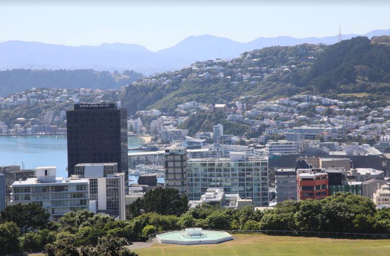
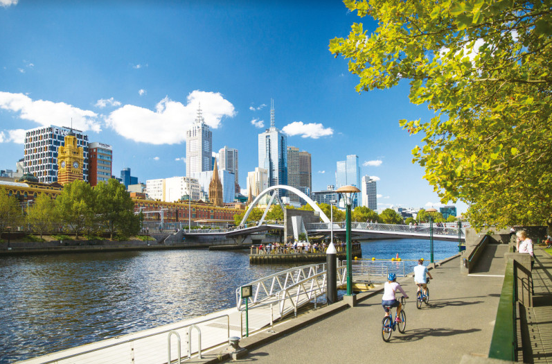
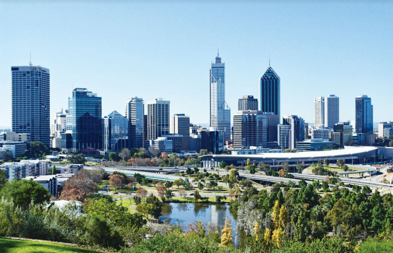
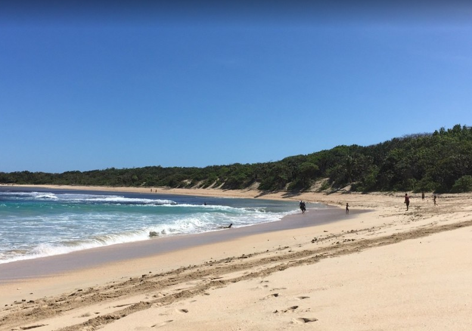
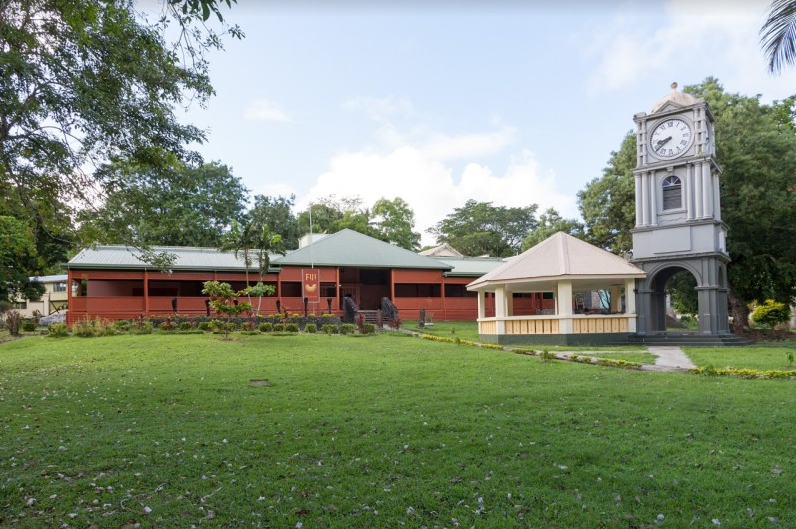
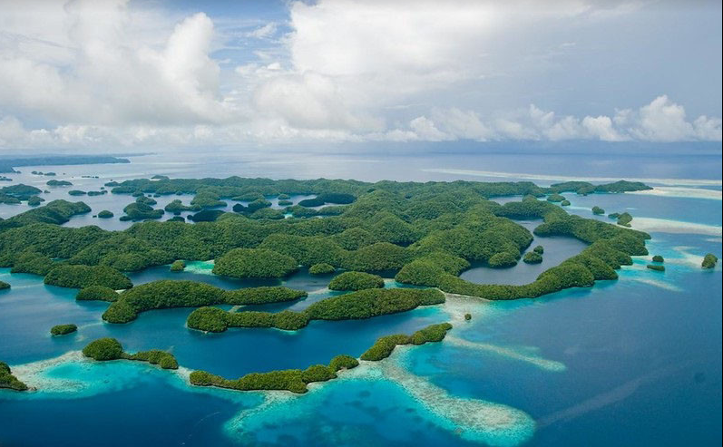
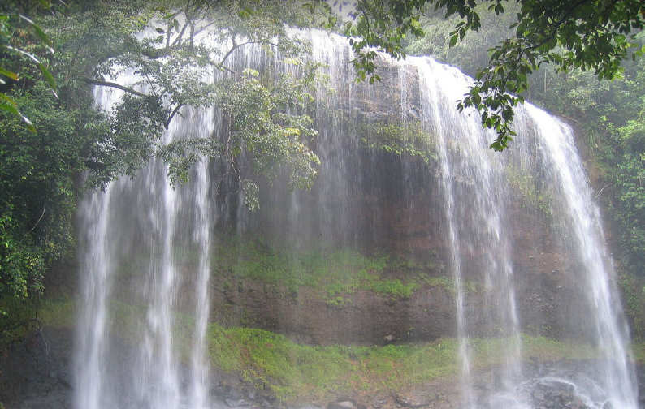
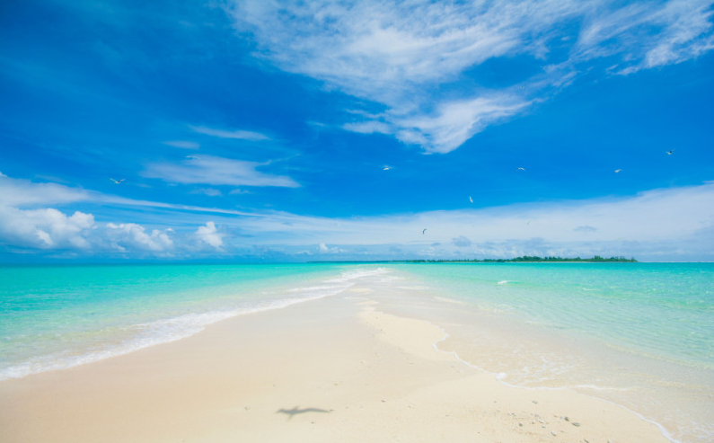

뉴질랜드(New Zealand)사진
오클랜드(북섬의 북단에 위치한 수많은 인종이 함께 어울려 사는 뉴질랜드의 최대 도시이며 경제 중심지)
 웰링턴(웰링턴은 뉴질랜드 행정의 수도로 북섬과 남섬으로 나뉘어진 영토의 중간 지점인 북섬 최남단에 위치한 도시)
호주(Australia)사진
멜버른(‘남반구의 유럽’ 멜버른은 유럽과 가장 닮은 도시이자 호주에서 두 번째로 큰 도시이다.)
 킹스 파크 & 식물원(5만평이 넘는, 세계에서 가장 큰 도심공원으로 서호주 퍼스의 자랑이다)
나타돌라 비치(피지에서 가장 아름다운 백사장 해변 중 한 곳으로 비티 레부 섬에 위치한 곳)
 피지 박물관(피지의 수도 수바에 위치한 역사 박물관으로 약 3,700여 년 전의 고고학 자료가 전시된 곳)
팔라우(Palau)사진
팔라우 록 아일랜드(유네스코 세계자연유산에 등재된 팔라우 최고의 스노클링, 다이빙 포인트 중 하나)
 가르드마우 폭포(열대정글 하이킹과 계곡 물놀이를 즐길 수 있는 팔라우 최고(最高)의 폭포)
 팔라우 롱 비치(물이 빠지면 길고 새하얀 모랫길처럼 나타났다가 물이 차면 사라지는 해변)